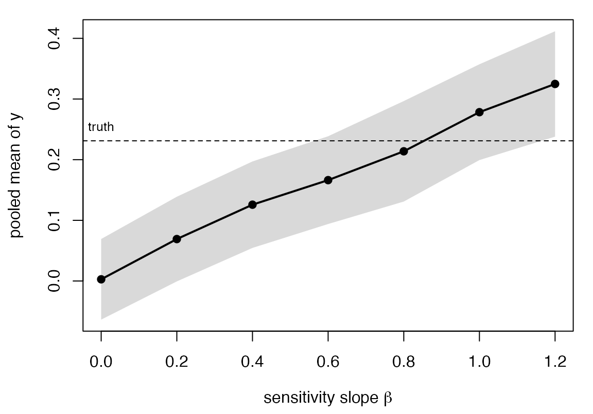

Missing data that depends on the missing value
Source:vignettes/missing_data_mnar.Rmd
missing_data_mnar.RmdImputation is conditioning on a gate
In proxymix you do not impute a missing entry so much as condition the fitted mixture on what its being missing tells you. For an entry missing at random that is nothing beyond the other coordinates, so the imputation law is the plain mixture conditional. Two common situations carry more information than that. An entry can be missing because it fell in a known interval – below a detection limit, above a ceiling – which is censoring. Or it can be missing with a probability that depends on its own unobserved value, larger values dropping out more often, which is missing not at random. Each is a gate multiplying the mixture conditional before the value is drawn.
| Mechanism | Gate | Constructor |
|---|---|---|
| missing at random | constant | mar() |
| censored | indicator of an interval | censored() |
| missing not at random | selection probability | mnar() |
A value-dependent mechanism biases the ordinary fit
Consider a two-component mixture where the second coordinate
y is missing with a probability that grows with
y itself, so the larger values are under-represented among
the observed.
n <- 1200
comp <- sample(1:2, n, replace = TRUE)
mu <- rbind(c(0, 0), c(1.5, 0.5))
L <- chol(matrix(c(1, 0.6, 0.6, 1), 2))
Z <- matrix(rnorm(2 * n), n, 2) %*% L + mu[comp, ]
colnames(Z) <- c("x1", "y")
truth <- mean(Z[, 2]) # the complete-data mean
miss <- runif(n) < plogis(-0.5 + 0.7 * Z[, 2]) # larger y, more missing
dat <- Z
dat[miss, "y"] <- NAAn imputer that assumes the data are missing at random fills the gap
from the conditional of the observed, which is itself short of the large
values, so it stays biased. Supplying the selection slope to
mnar() lets the fit account for the mechanism and recover
the mean.
mar_fit <- gmm_impute(dat, N = 2, m = 20, mechanism = mar(), seed = 1)
mnar_fit <- gmm_impute(dat, N = 2, m = 20, mechanism = mnar("y", beta = 0.7), seed = 1)
c(truth = truth,
available = mean(dat[!miss, "y"]),
mar = proxy_pool(mar_fit, "y")$estimate,
mnar = proxy_pool(mnar_fit, "y")$estimate)
#> Analytic pooling is not defined for a gated ("mnar") mechanism; pooling by
#> Rubin's rules instead.
#> ℹ The returned attribute `method` records what was used.
#> truth available mar mnar
#> 0.23108581 -0.09794993 0.01068370 0.20500158The slope beta is the strength of the dependence on the
log-odds scale, and beta = 0 is the missing-at-random case.
The intercept is not supplied – it is calibrated to the observed
fraction missing.
The slope is a sensitivity parameter
A missing-not-at-random departure cannot be identified from the
observed data, so a single estimate would overstate what the data
support. The appropriate summary is a curve:
proxy_mnar_sensitivity() sweeps the slope and reports the
pooled mean with its interval at each value, and the analyst reads off
where a conclusion would change.
sweep <- proxy_mnar_sensitivity(dat, "y", beta_grid = seq(0, 1.2, by = 0.2),
N = 2, m = 20, seed = 1)
sweep[, c("beta", "estimate", "conf.low", "conf.high")]
#> beta estimate conf.low conf.high
#> 1 0.0 0.002778616 -0.0636722281 0.06922946
#> 2 0.2 0.069116912 -0.0006741309 0.13890795
#> 3 0.4 0.125791797 0.0545376895 0.19704590
#> 4 0.6 0.166268504 0.0939383140 0.23859869
#> 5 0.8 0.213794032 0.1309621000 0.29662596
#> 6 1.0 0.278313865 0.1993631237 0.35726461
#> 7 1.2 0.324815991 0.2379499875 0.41168200
The estimate rises monotonically with the assumed slope and crosses the complete-data truth near the slope that generated the data, which is the value proposition of a sensitivity analysis – without knowing the slope, sweeping it brackets the truth.
Censoring is the exact, identifiable case
When the reason for missingness is a known bound, the mechanism is
identified and there is no sensitivity parameter. A detection limit that
hides values of y below a threshold is
censored("y", upper = threshold), and proxymix draws from
the mixture conditional truncated to the censored interval rather than
substituting a constant such as half the limit.
thr <- 0.3
cmiss <- Z[, 2] < thr
cdat <- Z
cdat[cmiss, "y"] <- NA
cfit <- gmm_impute(cdat, N = 2, m = 20, mechanism = censored("y", upper = thr), seed = 1)
c(truth = mean(Z[, 2]),
available = mean(cdat[!cmiss, "y"]),
half_limit = mean(ifelse(cmiss, thr / 2, Z[, 2])),
proxymix = proxy_pool(cfit, "y")$estimate)
#> Analytic pooling is not defined for a gated ("censored") mechanism; pooling by
#> Rubin's rules instead.
#> ℹ The returned attribute `method` records what was used.
#> truth available half_limit proxymix
#> 0.2310858 1.1165493 0.5962236 0.2088121Scope and references
The interval and value-dependent gates act on a single coordinate,
and a row missing that coordinate is assumed to have its other
coordinates observed, which is the detection-limit or single-outcome
setting. A model estimand other than a coordinate mean is pooled by
handing the completions to mice through
as_mids().
The selection-model formulation follows Diggle and Kenward (1994) and the sensitivity-analysis posture follows Little (1993) and the missing-data literature it anchors. The truncated-Gaussian algebra behind the censored path is standard, and the closed-form moments are evaluated directly.